| すごく簡単な電子書籍の作り方: ～Windowsフリーソフトで作るEPUBファイル～ | |
| 楠樹 暖 | |
| oritoyo shuppan (2015) | |
すごく簡単な電子書籍の作り方
～Windowsフリーソフトで作るEPUBファイル～
楠樹 暖
織豊出版
Amazon Kindle ダイレクト・パブリッシング（KDP）や、楽天Koboライティングライフ等により、誰もが簡単に本を出版できるようになりました。しかし、要 であるEPUBファイルの作成で困っている人も多いと思います。本書ではWindowsフリーソフトt2epubを使って簡単にEPUBファイルを作る方法を紹介します。
また、マンガ、絵本、イラスト集、写真集を作るときの固定レイアウトのEPUBファイルを作る方法も紹介します。
本書が対象とするのは、Windowsだけです。Macやその他OSの方は申し訳ありませんが対象外です。
また、記述内容もすごく簡単に最小限のことしか書いてありません。中級者以上の方は専門の本をご覧ください。
EPUBファイルを作るには準備が必要です。
Windowsパソコン一式以外で必要なものは
・EPUB変換ツール t2epub
（http://www.rechner-systems.com/lab/index.php?t2epub ）
です。
フリーソフトですので無料で使えます。
Vectorのサイト からダウンロードしましょう。
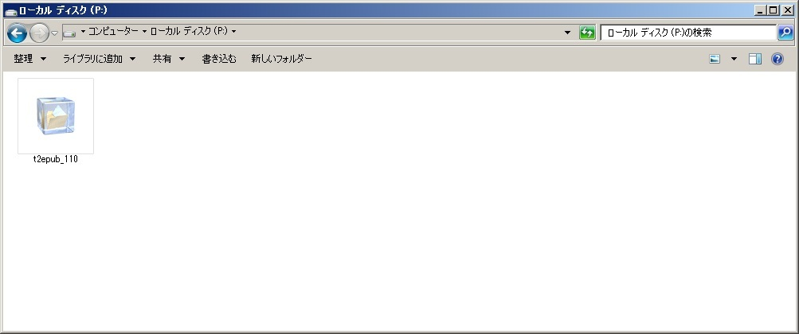
ダウンロードしたらZIPファイルの中のt2epubフォルダをコピーして、任意のフォルダ(たとえばC:\ など)にペーストします。C:\Program Files フォルダなどに置くと、フォルダに書き込み権限を与えないと使えない場合がありますので注意してください。
解凍ツールによっては、ZIPファイルをダブルクリックするとデスクトップにt2epubフォルダが解凍される場合もあります。
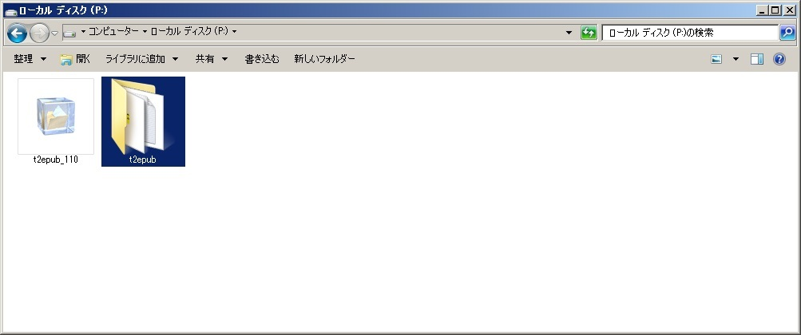
「t2epub.exe」、「t2epub4fixed.exe」をコピーして、デスクトップにショートカットとして貼り付けておきます。
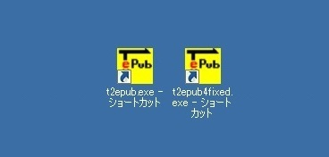
任意の場所に作業フォルダを作ります。
(例：C:\作業フォルダ)
以降、電子書籍の作成はこのフォルダで行います。
これからは、サンプルとして
書籍名＝『楠の奇談』
著者 ＝『楠樹暖』
出版社＝『織豊出版』
で流れを説明していきます。
まず最初に作業フォルダに本の書籍名と同じ名前のフォルダ（以降、「書籍フォルダ」と呼びます）を作ります。
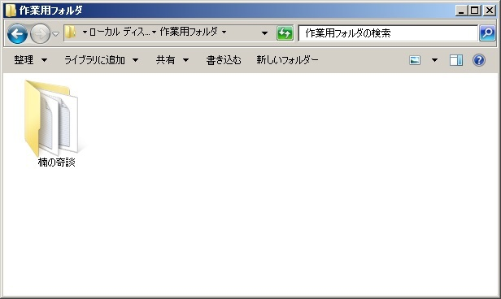
本のフォルダの中にファイルを二つ作ります。
電子書籍の作成には最低二つファイルが必要です。
(1) 書籍情報ファイル
(2) 本文ファイル
この場合は表紙用のファイルが無いので自動で作られます。表紙の指定方法は後ほど説明します。
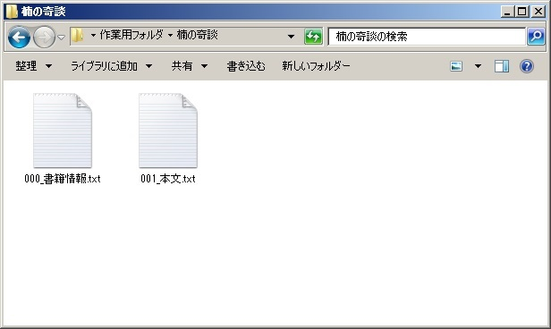
ファイル名は何でも構わないのですが、ファイル名順で並び替えた時に書籍情報ファイルが先頭にくるような名前にしてください。ファイル名の最初に数字を付けておくと便利です。
書籍情報ファイルをエディタで開いて書籍情報を書きます。
1行目：書籍名
2行目：作者名
3行目：出版社名
3行目の出版社名は無くても構いません。
4行目以降に記述した内容は奥付として本の後ろに書かれます。
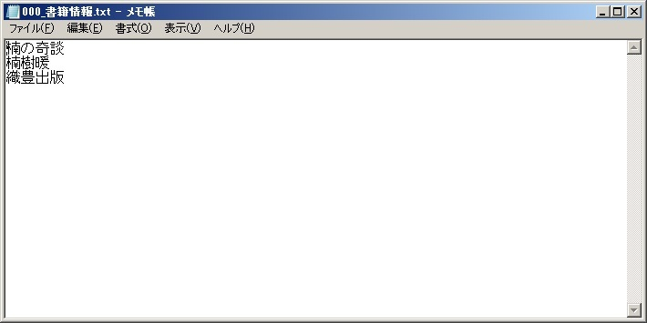
本文ファイルをエディタで開いて本文を書きます。
既に他にテキストファイルを持っている場合は、ファイルをコピーしてリネームしても、テキストをコピー＆ペーストしてもいいです。
1行目：目次に追加される章のタイトル
2行目以降：実際の本文
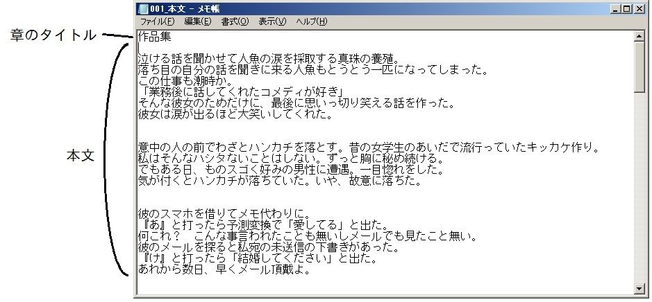
1行目のタイトルを付け忘れると本文の最初の文が章のタイトルとなってしまうので注意してください。
改行だけの行が二つ続くと改ページになります。
改行だけの行が三つ続くと新たな章になります。次の行が章のタイトルとなります。
最初の設定では、HTMLタグが有効となっていますので、HTMLタグとして使用しない半角の「<」や「>」は全角に置き換えてください。
本文ファイルは二つ以上あっても構いません。それぞれの1行目が目次の章のタイトルとなります。
テキストファイルの準備ができたらEPUBに変換します。
t2epubショートカットに書籍フォルダをドロップしてt2epubを起動します。
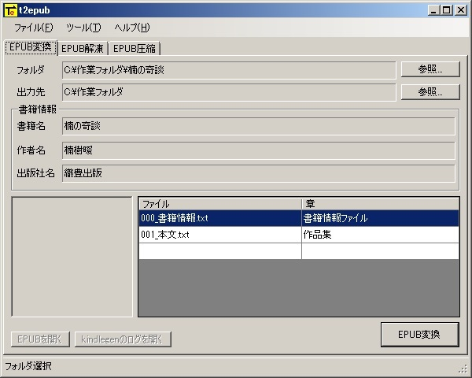
「EPUB変換」ボタンをクリックします。
EPUBファイル完成！
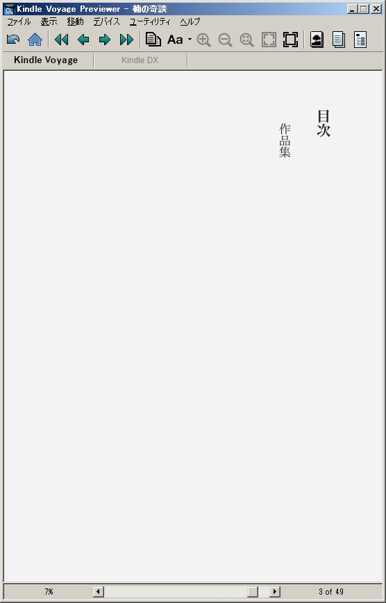 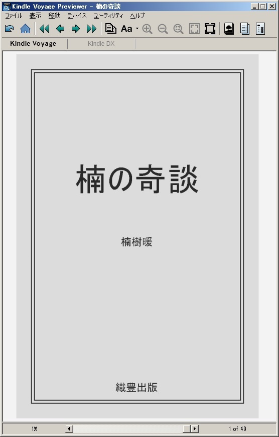
表紙用の画像ファイルを用意しなかったので表紙は文字だけになっています。
前の章では最小限のEPUB作成だけでした。
この章では表紙の付け方を説明します。
作業フォルダの書籍フォルダに表紙用の画像ファイルを置きます。
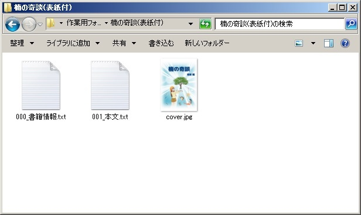
t2epubショートカットに書籍フォルダをドロップしてt2epubを起動します。
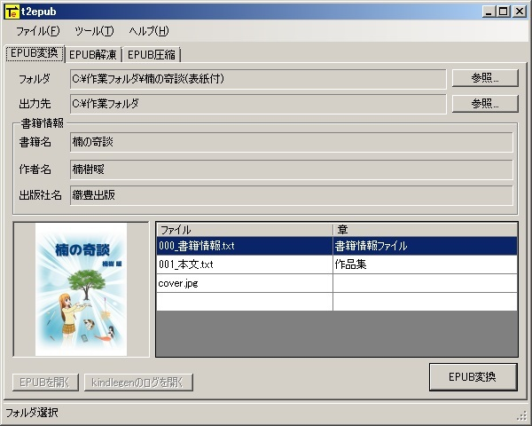
「EPUB変換」ボタンをクリックします。
表紙が付きました。
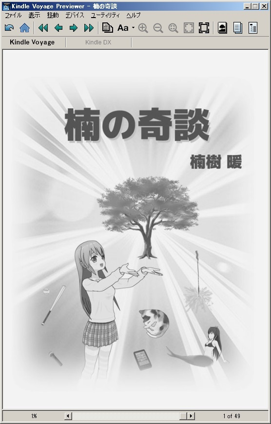
表紙以外の画像ファイルは挿絵になります。画像ファイルを置く場所は書籍フォルダの直下です(本文ファイルと同じフォルダ)。
気をつけないといけないのは、ファイル名の並びで先頭の画像ファイルが表紙ファイルになるということです。また、本文ファイルのファイル名もページ位置に影響します。ページ順にファイルの先頭の数字を変えると便利です。
本文の途中に入れたい場合は本文ファイルを分割します。
分割した後ろの本文ファイルの先頭は章のタイトルになってしまうので、空行だけにします。
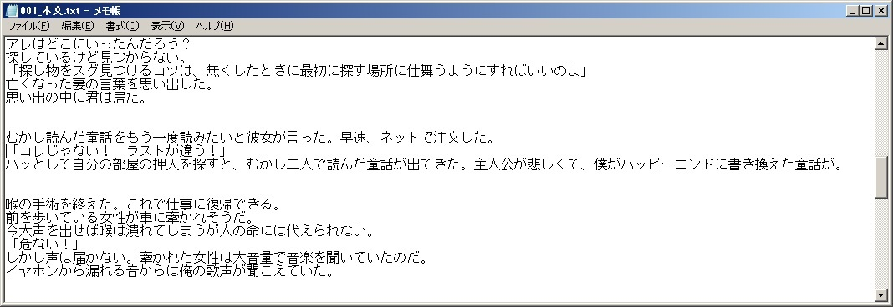
↓
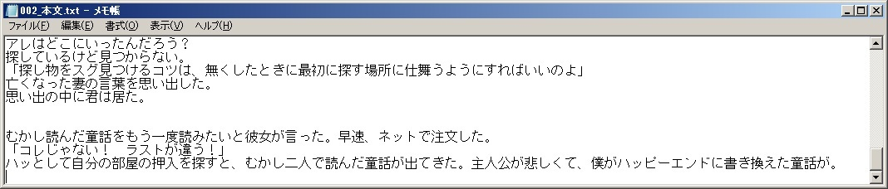
003_挿絵.png
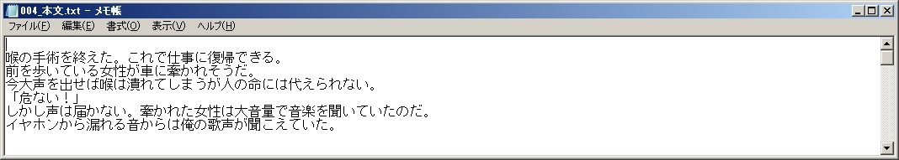
t2epubショートカットに書籍フォルダをドロップしてt2epubを起動します。
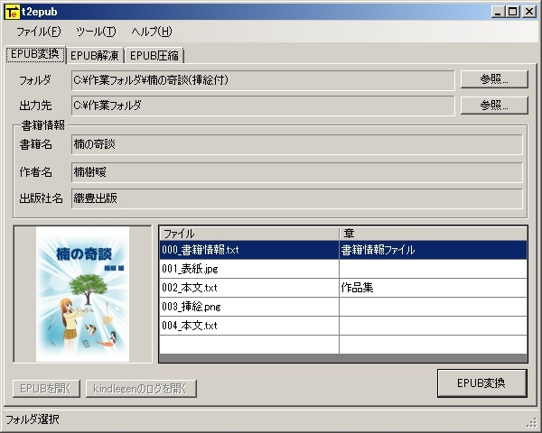
「EPUB変換」ボタンをクリックします。
挿絵が付きました。
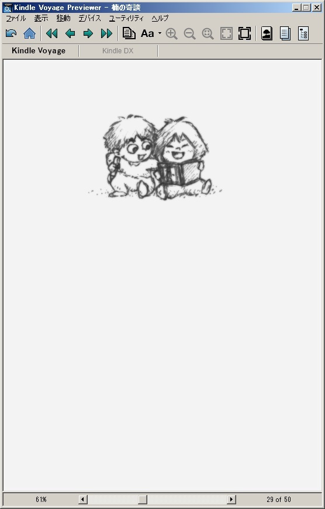 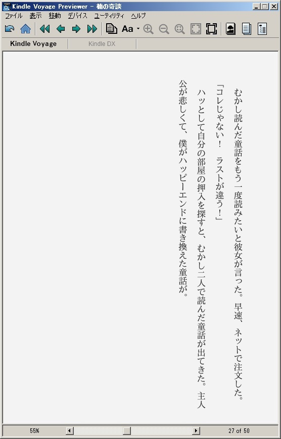
先の方法では、挿絵は1ページ分を占めていましたが、HTMLのタグを使うことで文の途中に入れることもできます。
<img src="images/○○.jpg" />
位置の指定もできます。詳しくはHTMLやCSSの本で調べてください。
書籍フォルダの中にimagesフォルダを作って、画像ファイルはimagesフォルダに置いてください。imagesフォルダは設定で決まっているので変更してはいけません。
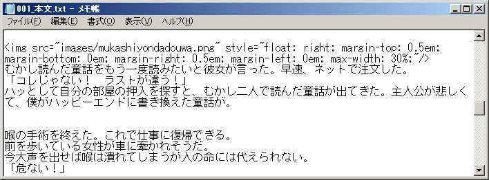
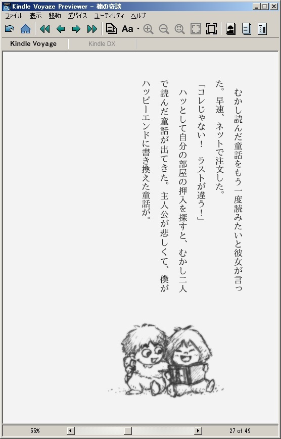
<image>タグ内のstyleの「float: right;」は画像を右側（縦書きの場合は下側）に寄せ、文章を左側（縦書きの場合は上側）に回り込ませる指定です。
ルビは記号を使って記述します。
全角の「｜」 が開始を表す記号で、「《」、「》」に囲まれた文字がルビとなります。「｜」は省略可能です。
例：｜漢字《かんじ》 漢字
省略した場合は「《」の前の漢字部分が対象となります。
例：漢字《かんじ》 漢字
ルビは「小説家になろう」サイトのルビ記法に似ていますが、半角の「|」や、「（」、「）」を使った場合はルビになりません(設定により変更可能です)。
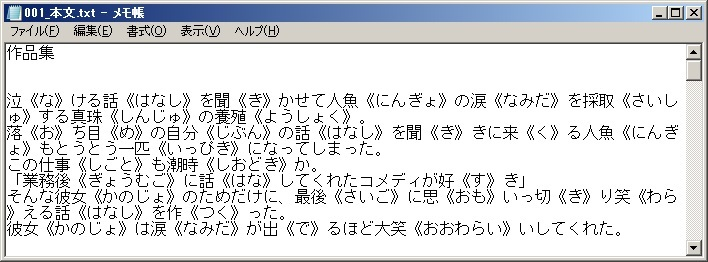
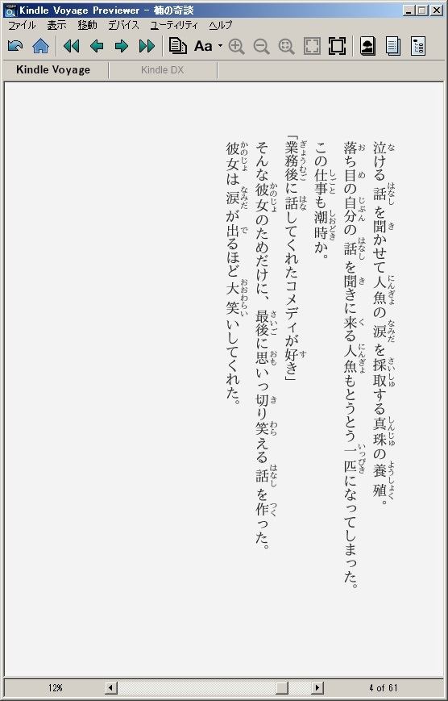
傍点は記号を使って記述します。
全角の「《《」、「》》」に囲まれた文字に傍点が振られます。
例：《《傍点》》 傍点
マンガ、イラスト集、写真集等の固定レイアウトのEPUBを作成する方法を説明します。
手順の説明には、マンガ『ブラックジャックによろしく』を使用します。
作業フォルダに、書籍フォルダを作ります。
書籍フォルダに、
(1)書籍情報ファイル
(2)表紙画像ファイル
(3)各ページの画像ファイル
を置きます。
表紙画像ファイルのファイル名は、各ページの画像ファイルよりも前に来るようにしてください。
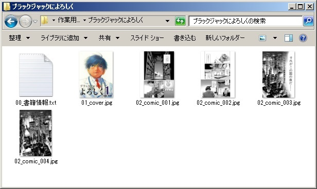
t2epub4fixedショートカットに書籍フォルダをドロップしてt2epub4fixedを起動します(t2epub.exeではないです)。
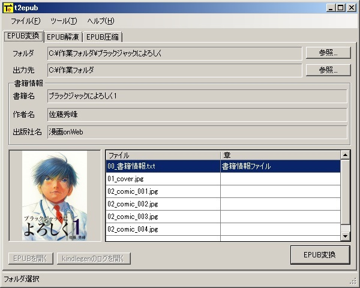
「EPUB変換」ボタンをクリックします。
EPUBが出来ました。
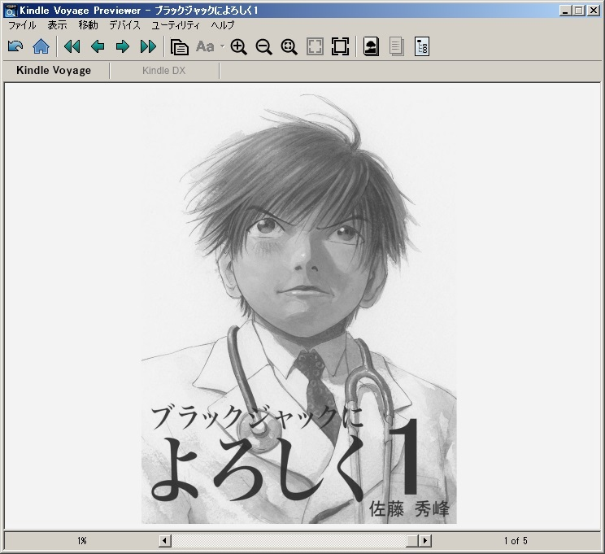 表紙
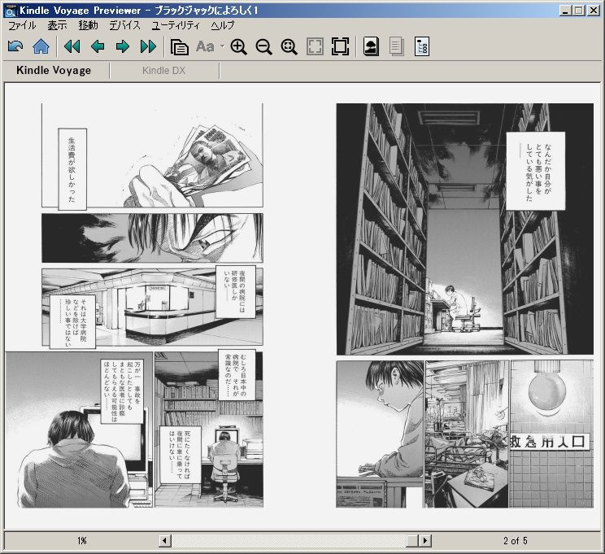 1、2ページ
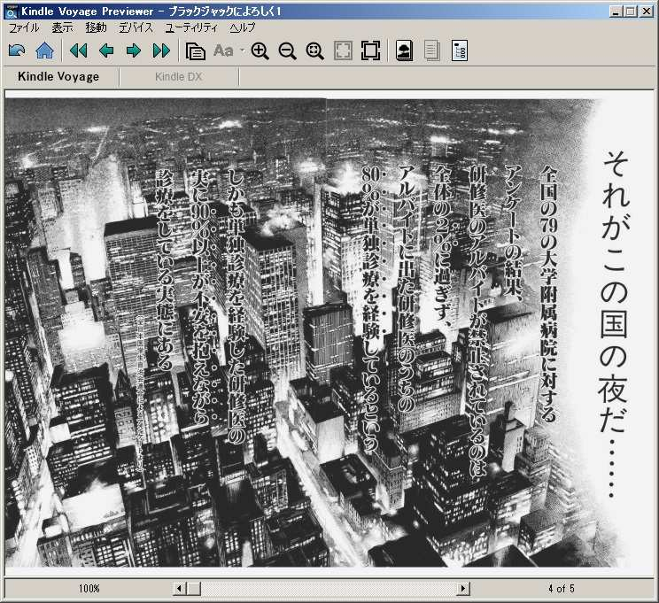 3、4ページ
t2epubの設定が最初のままの場合、「1ページと2ページ」「3ページと4ページ」と見開き配置になっていますので、元画像の3ページ目、4ページ目が見開きとして横長の1枚の絵になっています。1ページずれると見開きがおかしなことになるので注意してください。
この章では「小説家になろう」サイトからEPUBを作る方法を説明します。
「小説家になろう」サイトにログインをし、投稿済み小説－管理ページに行きます。
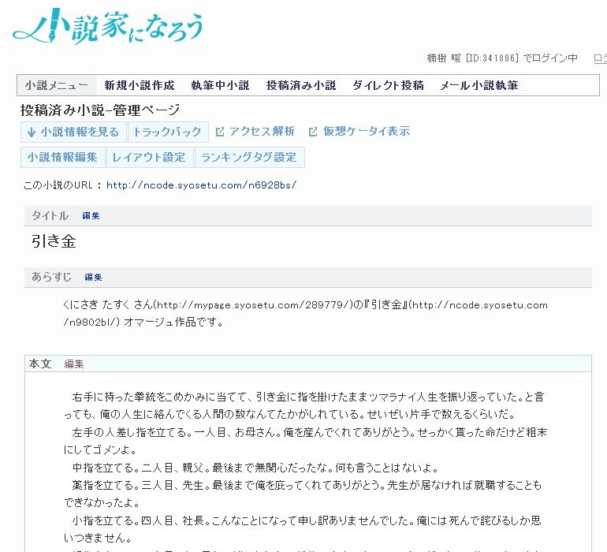
作業フォルダに小説のタイトルの名前のフォルダを作ります。
書籍情報ファイルと、本文ファイルを作ります。
書籍情報ファイルの1行目を「タイトル」に、2行目を「作者名」にして保存します。
「小説家になろう」サイトの本文を編集画面で開きます。
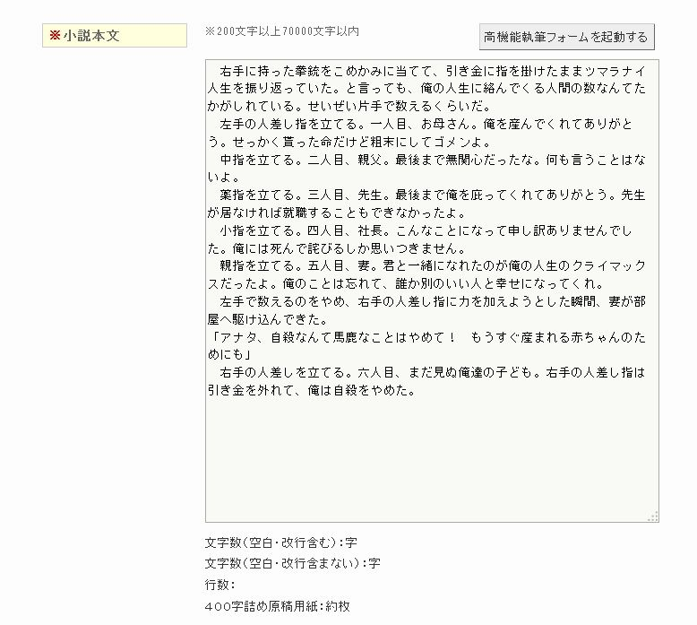
本文をコピーして、本文ファイルにペーストします。
本文ファイルの1行目を章のタイトルにします。
本文ファイルは適宜分割します。1行目の章のタイトルを忘れないようにします。章のタイトルを付けたくない場合は空行にします。
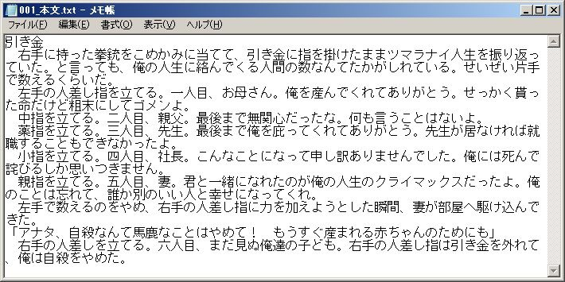
ルビ記法を揃えます。「｜」 が半角なら全角に変換します。「（」、「）」を使っている場合は、「《」、「》」に変換します。
イラストを使用している個所をHTMLタグの<image>に変更します。<iコード |ユーザID >の個所です。画像は別途用意して、書籍フォルダのimagesフォルダに置きます。画像フォルダに応じて<image>タグのプロパティを記述してください。
t2epubショートカットに書籍フォルダをドロップしてt2epubを起動します。
「EPUB変換」ボタンをクリックしてEPUBを作ります。
Kindleで動作確認する場合は、EPUBファイルよりも、mobiファイルの方が便利です。t2epubでEPUB変換時にmobiも一緒に作るようにしておきましょう。
mobiの変換には、KindleGen が必要です。
KindleGen は、以下から入手してください。
http://www.amazon.co.jp/gp/feature.html?ie=UTF8&docId=3077677546
ダウンロードしたZIPファイルからkindlegen.exe をコピーして、t2epubフォルダに貼り付けます。
あとは、t2epubのEPUB変換時に、コマンドプロンプトの黒い画面が出てmobiに変換するようになります。
mobi変換の結果は.logファイルに出力されます。問題がないか確認して、問題があったら修正しましょう。
よくあるのは、<img>タグで指定した画像ファイルが無い場合です。max-widthやmax-heightがサポートされていないという警告は、たぶん無視しても構いません。
Kindle端末で確認する場合には、mobiファイルを直接コピーしたり、Kindleパーソナル・ドキュメントサービスのSend-to-Kindleを使います。ただし、iPhoneの場合は、mobiファイルのコピーはできませんし、Send-to-Kindleでmobiファイルを送れますが、iPhoneのKindleアプリで確認すると、縦書きが横書きになってしまいます。
iPhoneで確認する場合は、Kindleプレビューア とiTunes が必要です。
Kindleプレビューア は、以下から入手してください。
http://www.amazon.co.jp/gp/feature.html?ie=UTF8&docId=3077677546
Kindleプレビューアを起動し、作成したEPUB、またはmobiを開きます。
メニュー[デバイス]-[Kindle for iOS]を選択します。
.azkファイルができます。
.azkファイルは、ファイル名に日本語を使っているとKindleアプリでうまく動作しないので、半角英数字に変えます。
iTunesを起動します。
iPhoneをパソコンに接続します。
iPhoneのメニュー[App]を選択します。
[ファイル共有]の[App]で[Kindle]を選択します。
[Kindleの書類]のところに.azkファイルをドロップします。
しばらくすると、.azkファイルが[Kindleの書類]から消えます。iPhoneのKindleアプリで確認してください。
本書の内容で、電子書籍作成で最小限のことはできるようになったはずです。
EPUB変換ツールt2epubはHTMLタグをそのまま通すため、HTMLタグ操作でもっと色々なことができるようになります。また、templateフォルダのCSSファイルを編集することで細かい表現もできるようになります。本書ではEPUBの作成方法について「すごく簡単に」解説しただけですので、更に進むには、EPUB、HTML、CSSの知識が必要となります。詳しくは専門書をお読みください。
本書の挿絵のサンプルとして、電子ショートショート作家 くにさきたすく さんから頂いたイラストを使用しています。また、「小説家になろう」のサンプルとして、くにさきたすく さんの作品に対するオマージュ作品を使用しています。くにさきたすく さん、ありがとうございました。
本書のマンガのサンプルとして、二次利用フリーな『ブラックジャックによろしく』から一部を抜粋してを使用いたしました。佐藤秀峰先生、漫画onWeb様、ありがとうございました。
タイトル ブラックジャックによろしく
著作者名 佐藤秀峰
サイト名 漫画 on web
『恋獄のマキシミン』
幸せの絶頂というほど天国でもなく、不幸のどん底というほど地獄でもない。
そんな男女が繰り広げる恋の駆け引きを描くショートショート集。
気楽に読める約2ページ分の作品が16作品。
定価100円
つづら折本（楠樹式豆本）
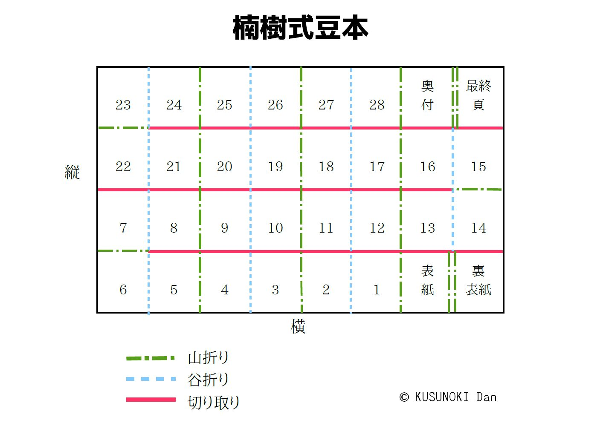
Ａ４一枚から作る豆本！ 三ヶ所切って折るだけでＡ９サイズの豆本ができる！
折本の遺伝子を受け継ぐ豆本！ コンビニのネットプリントで本を配布するのに最適です。
Ａ７サイズの楠樹式折本もあります。
詳しくは「楠樹式豆本」で検索！
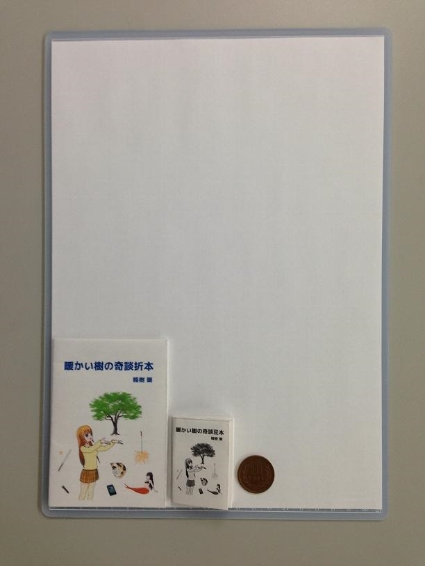
写真はＡ４の紙の上に、左から八頁折本（Ａ７判）、楠樹式豆本（Ａ９判）
|
||||||||||||||||||||||||||